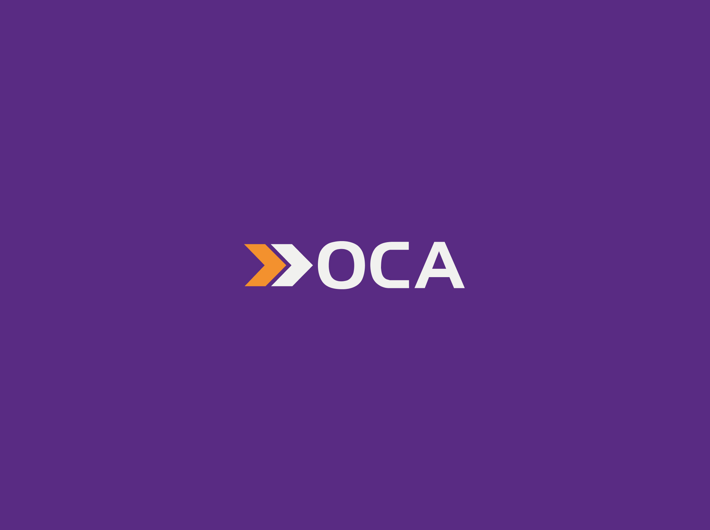
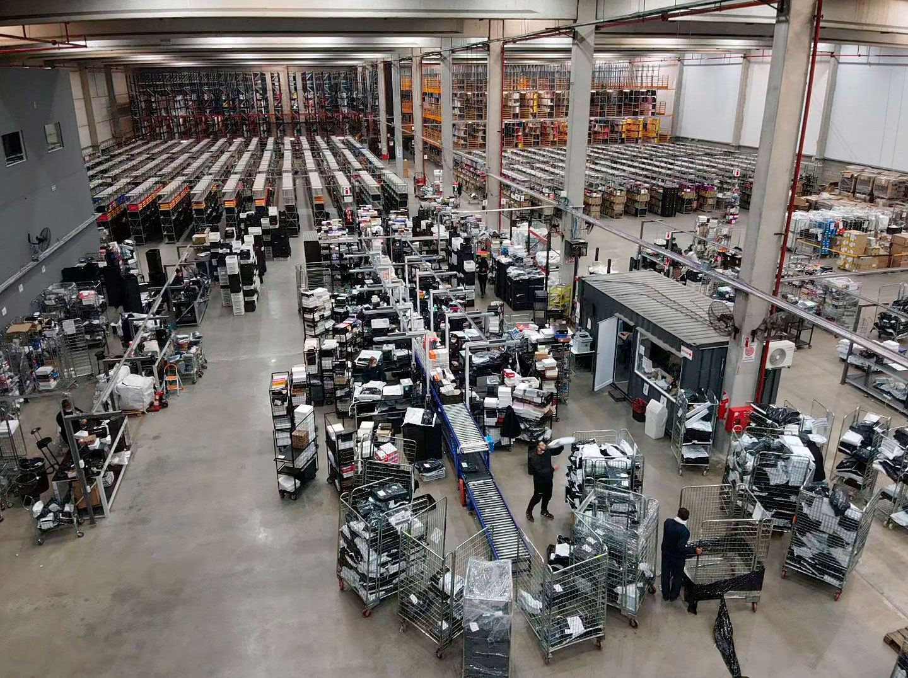
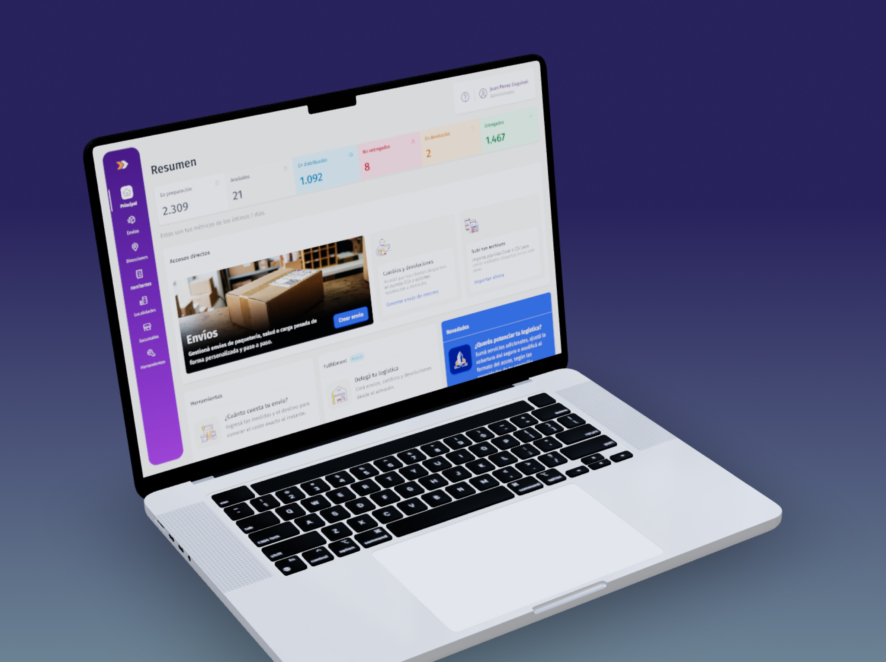
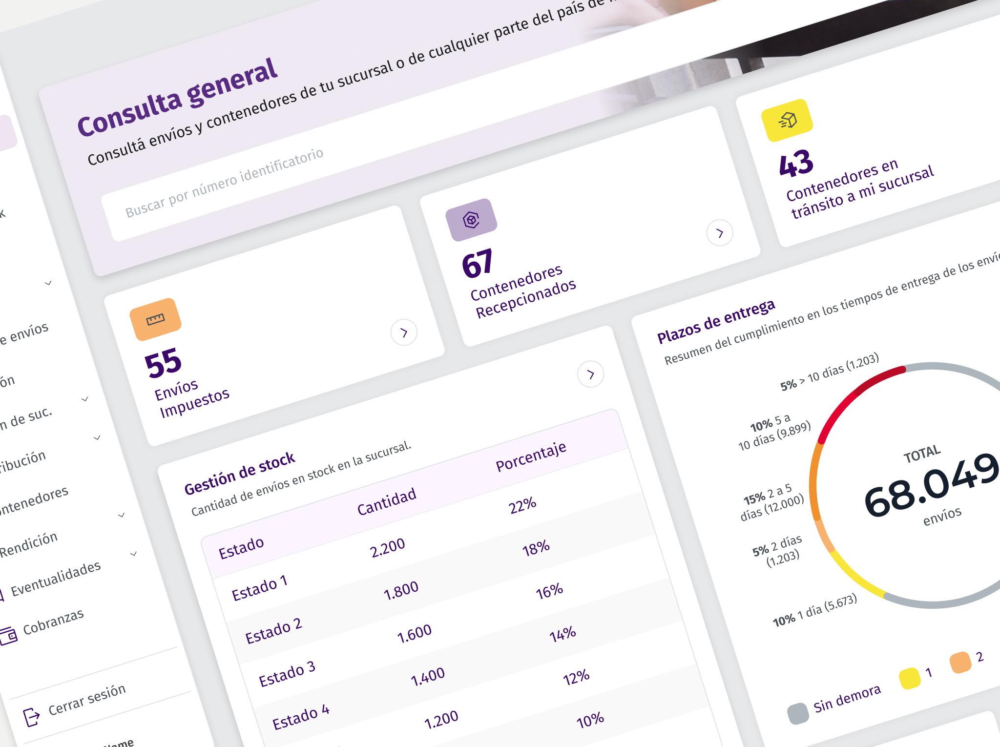
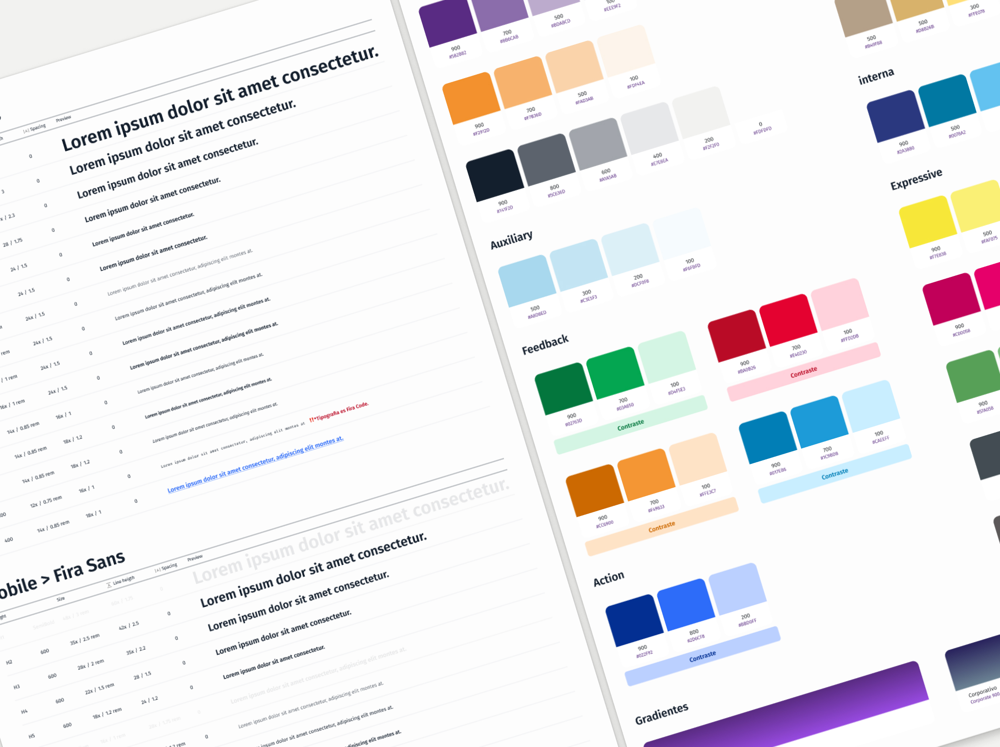
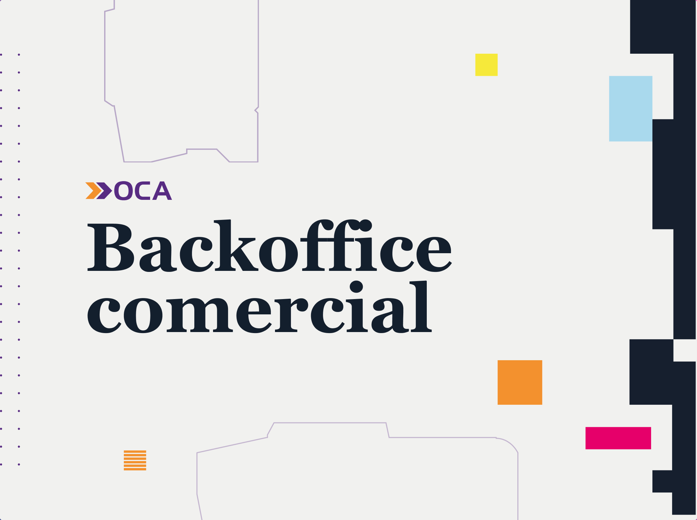

Cuando me sumé a OCA, la empresa estaba dando sus primeros pasos en un proceso de transformación digital. El equipo de Producto recién comenzaba a formarse y todavía no existía una práctica de Product Design integrada al desarrollo de los productos.
Nos encontramos con múltiples plataformas construidas en distintos momentos, con tecnologías, criterios de diseño y reglas de negocio diferentes. Cada nuevo requerimiento respondía a una necesidad puntual y eso generaba experiencias inconsistentes, funcionalidades duplicadas y una deuda técnica que hacía cada vez más difícil evolucionar los productos.
El desafío no era rediseñar una aplicación. El desafío era ayudar a construir una forma distinta de diseñar productos digitales dentro de una organización de gran escala.
Comencé como Product Designer y acompañé el crecimiento del área mientras el equipo se consolidaba. Impulsé entrevistas con usuarios, sesiones de discovery, talleres con distintas áreas y nuevas formas de trabajo colaborativo para incorporar la investigación como parte del proceso de diseño.
También participé en la creación del primer archivo compartido en Figma y en la construcción de una base común para unificar criterios entre productos. Con el tiempo, ayudé a formar un equipo que hoy trabaja de manera autónoma y continúa evolucionando esas prácticas.
Mi trabajo no se limitó al diseño de interfaces. Busqué conectar negocio, tecnología y usuarios para que las decisiones de producto estuvieran respaldadas por contexto, evidencia y una visión compartida.
Realicé entrevistas con clientes, recorrí plantas logísticas, observé procesos operativos, trabajé junto a equipos comerciales y facilité talleres con distintas áreas para comprender cómo funcionaban los productos y detectar oportunidades de mejora.
Uno de los desafíos fue generar confianza alrededor de la investigación. En muchos casos, era la primera vez que un equipo de Producto observaba el trabajo cotidiano de operadores y usuarios. Con el tiempo, esas instancias se transformaron en una herramienta para alinear decisiones, validar hipótesis y acercar distintas áreas de la organización.
Entrevistas, observación en campo y sesiones de validación que antes no existían en el proceso.
Primer paso hacia una práctica de diseño organizada y colaborativa en la organización.
Infraestructura visual que unifica ePak, OMS, Backoffice y los productos futuros.
Trabajo sostenido junto a producto, tecnología, negocio y operaciones.
Más cercana a los usuarios y apoyada en investigación real.
Cuando me incorporé, el equipo de Producto recién comenzaba a formarse. Participé en la creación del primer archivo de Figma de la organización e impulsé prácticas de investigación, discovery y colaboración interdisciplinaria que sentaron las bases para la evolución de los productos digitales.



